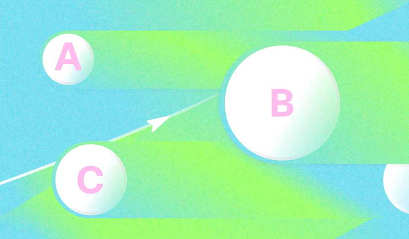
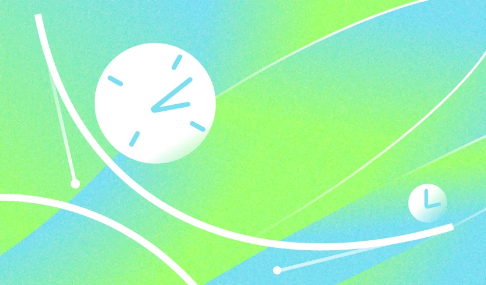

II часть · 4 глава

Кодинг · 10 минут
Синтаксис keyframes, свойство animation и как запустить анимацию в браузере

Кодинг · 7 минут
Как темп анимации влияет на восприятие пользователя
Кодинг · 5 минут
Особенности ховера и как сгладить переходы между анимациями